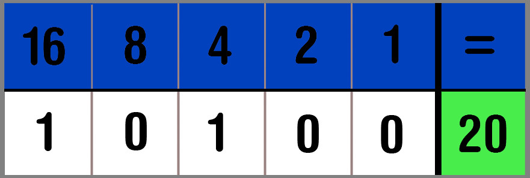

Hieronder vind je een uitleg over het binair stelsel. Als je liever luistert in plaats van leest, vind je onder deze tekst een uitlegfilmpje.
Het binair stelsel is een getallensysteem. Wij gebruiken het 'decimaal getallenstelsel', waarbij gebruik wordt gemaakt van machten van 10. Je telt met de getallen 0 t/m 9 en zodra je van 9 naar 10 gaat, vervang je de 9 door een o en er komt een 1 voor te staan. Dit gebeurt ook bij 19 naar 20, maar dan wordt de 1 vervangen door een 2.
Tellen
Bij het binair stelsel wordt gebruik gemaakt van machten van 2. Je begint altijd rechts met tellen. Op de eerste plek kan je 2 getallen neerzetten, namelijk 0 en 1. Zodra je een 1 hebt neergezet, kan je niet verder naar 2, dus dan ga je naar plek 2. Hier vul je dan een 1 in. De tweede plek staat voor 2¹ (=2). Als je het getal '2' wilt opschrijven, krijg je dus '10' in het binair stelsel. In het plaatje hiernaast zie je welk getal op welke plek komt. Je ziet dat de vierde plek voor '8' (2³) staat, en de vijfde plek voor '16' (2⁴). Ook zie je dus dat als je 10100 hebt, dit 1x2⁴ + 1x2² = 20 wordt. Een ander voorbeeld: je hebt het getal '101100' in het binair stelsel. De eerste 1 staat op de derde plek, dus 2². De tweede 1 staat op de 4 vierde plek, dus 2³. De derde 1 staat op de zesde plek, dus 2⁵. Als je dit bij elkaar optelt, krijg je 1x2² + 1x2³ + 1x2⁵ = 44.
Kleuren
Het rijtje van machten van 2 gaat door t/m 8 plekjes, dus tot 128. Als je alle plekjes op 1 zou zetten, krijg je de kleur wit en als je alles op 0 zou zetten krijg je de kleur zwart. Zodra alles op 1 staat, krijg je samen het getal 256. Dit zijn ook alle mogelijke waardes die je kan kiezen om een kleur te krijgen (lees hier meer over).
Schrijven
De computer kan dit ook gebruiken om een tekst te schrijven. De eerste 3 cijfers van één byte bepalen of het een hoofdletter of een kleine letter is. De andere 5 cijfers bepalen de plek in het alfabet. Elke letter in het alfabet heeft namelijk ook een cijfer. De A is bijvoorbeeld 1 en de K is 11. Als je de hoofdletter K wilt schrijven, krijg je dus
Hopelijk is het nu allemaal duidelijke geworden! Hieronder vind je nog een spel om je nieuwe kennis te testen.